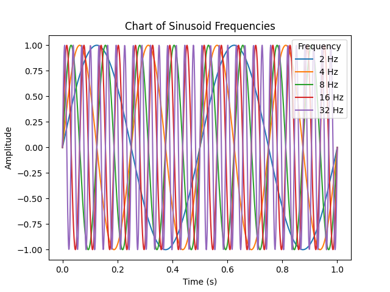
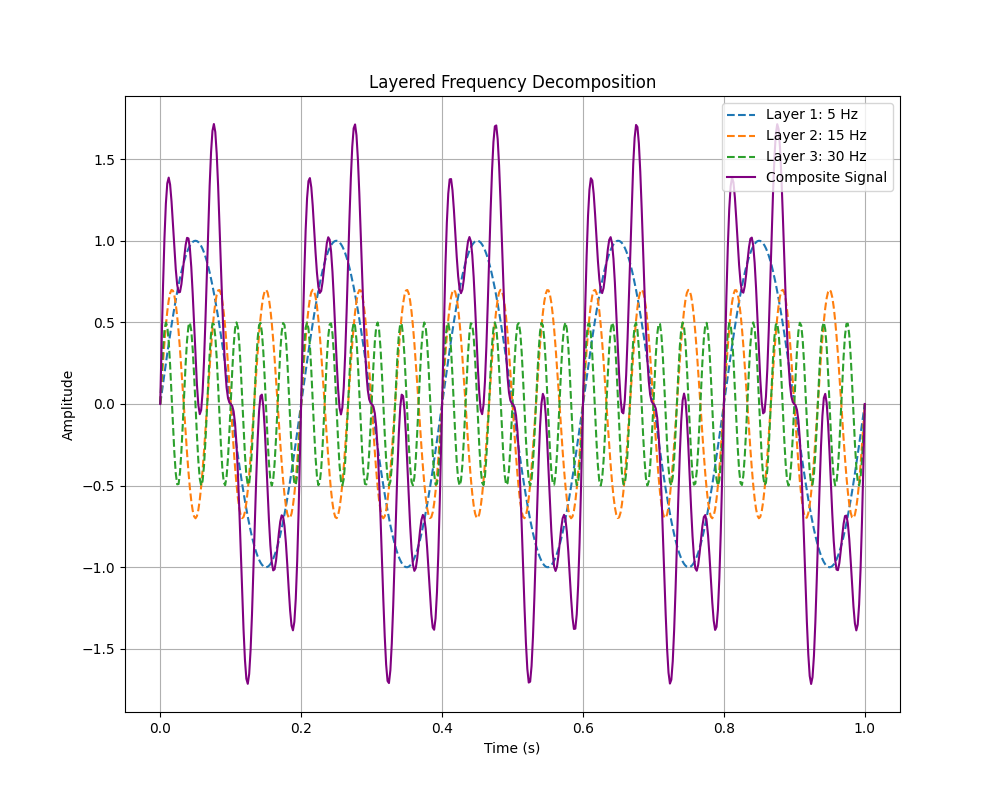
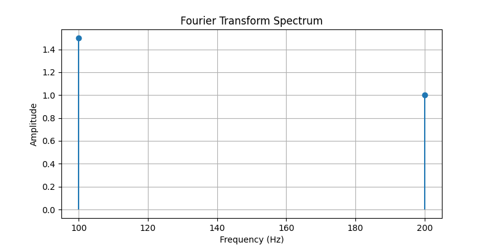
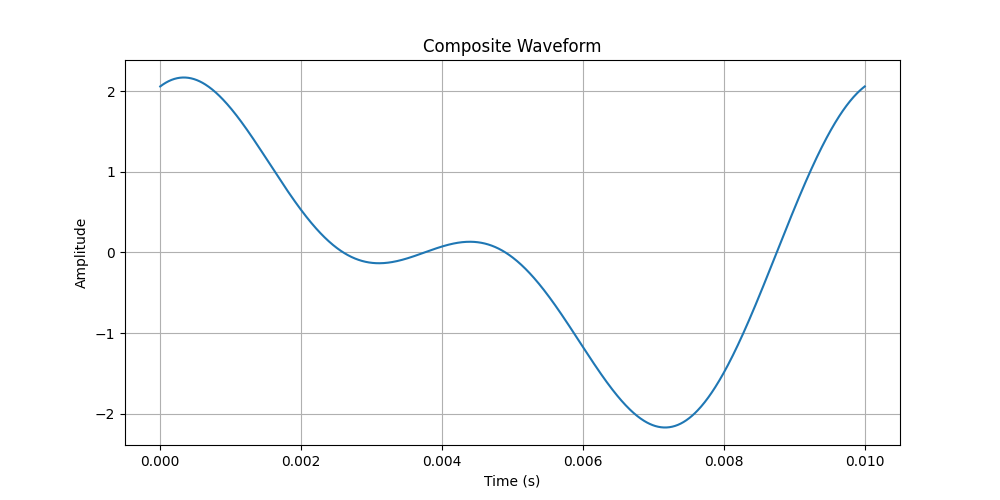
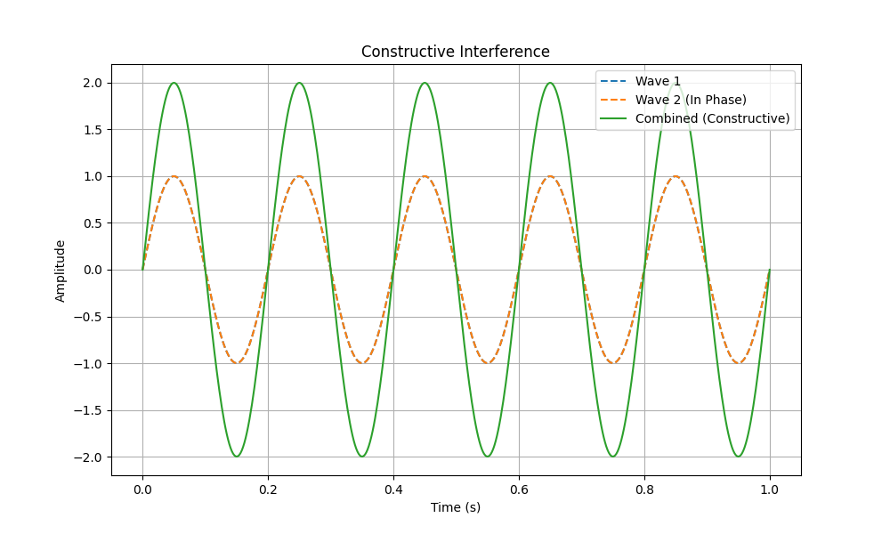
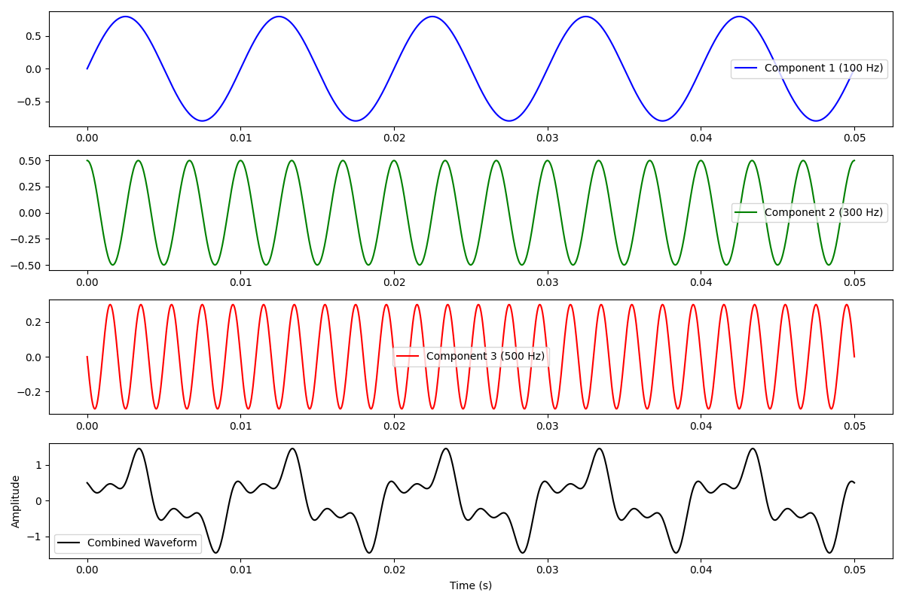
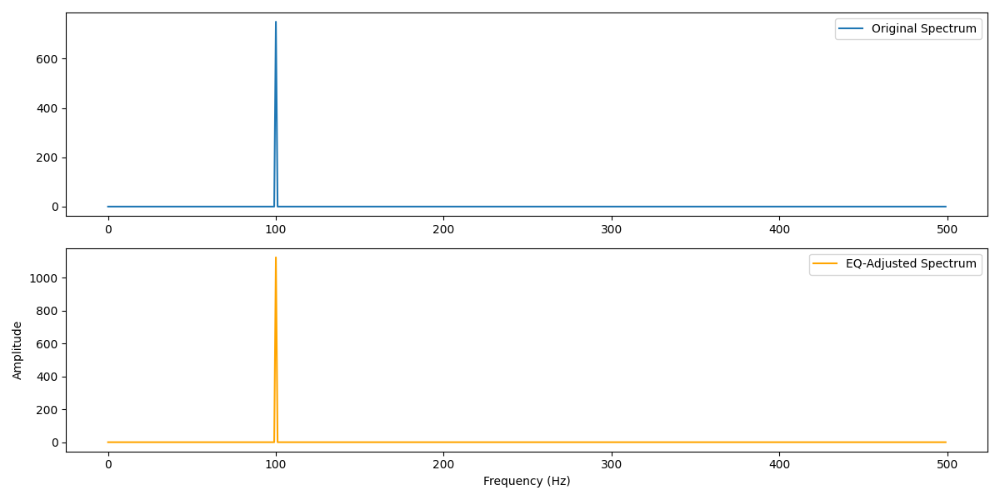

Tutorial 8: Sinusoidal Signals, Phase, and Addition of Sinusoids
1. Key Properties of Sinusoidal Signals
A sinusoid represents the simplest form of an audio signal, consisting of a single frequency or tone. Sinusoids are foundational in audio analysis and synthesis as they form the building blocks of more complex waveforms.
Basic Components of a Sinusoid
- Amplitude (A): The peak value of the wave, determining the loudness or intensity of the sound. Amplitude is usually measured in decibels (dB) for audio applications.
- Period (T): The time taken to complete one full cycle, measured in seconds. This is the duration from one peak to the next.
- Frequency (f): The number of cycles per second, measured in Hertz (Hz), calculated as:
\[ f = \frac{1}{T} \]
Example Calculations:
- If a sinusoid has a period \( T = 0.25 \, \text{s} \), its frequency is calculated as:
\[ f = \frac{1}{0.25} = 4 \, \text{Hz} \]
- Common audio frequencies include:
- 100 Hz - Typically perceived as low bass frequencies.
- 1 kHz - Represents midrange frequencies.
- 10 kHz - Considered high or treble frequencies.
Visualization of Sinusoid Frequencies
A sinusoid’s characteristics can be illustrated in a frequency chart showing the relationship between amplitude, period, and frequency:

Conversion Tip
When working with time delays, remember to convert milliseconds (ms) to seconds (s) by dividing by 1000. For instance, 150 ms would convert to:
Worked Example: Calculating Frequency from Period
Suppose we have a sinusoid with a period of \( T = 0.005 \, \text{s} \) (or 5 ms). The frequency can be calculated as:
2. Phase and Phase Delay in Sinusoids
Phase (\( \phi \)) represents a specific point within a cycle of a sinusoid, typically measured in radians or degrees. Phase is critical for aligning signals, understanding interference, and determining how combined sinusoids form complex waveforms.
Understanding Phase and Phase Delay
The phase of a sinusoidal wave determines its position within a cycle at any given time. When comparing two sinusoidal waves, a phase delay indicates how much one wave lags behind another. This delay directly affects how the waves interact, producing effects like constructive or destructive interference.
Phase Delay Calculation
For a sinusoid with frequency \( f \) and time delay \( t_D \), the phase delay is calculated as follows:
where:
- \( f \) is the frequency of the sinusoid in Hertz (Hz).
- \( t_D \) is the time delay in seconds.
Example Interpretation of Phase Delay
For a 10 Hz signal with a time delay of 150 ms:
- Convert the time delay to seconds: \( t_D = 0.15 \, \text{s} \).
- Calculate the phase delay:
\[ \phi = -2 \pi \cdot 10 \cdot 0.15 = -9.42 \, \text{radians} \]
This calculation shows that the second wave lags by 9.42 radians, influencing how it combines with any overlapping wave.
Phase Conversion between Degrees and Radians
Phase angles can be converted between degrees and radians. Here is a quick reference:
- 0° = 0 radians
- 90° = \( \frac{\pi}{2} \) radians
- 180° = \( \pi \) radians
- 360° = \( 2\pi \) radians
Worked Example: Phase Impact on Signal Overlap
Imagine two signals with identical frequency and amplitude. Their phase alignment will determine the resulting signal:
- In Phase (0°): The waves align perfectly, creating a stronger, combined signal with increased amplitude.
- Out of Phase by 180°: The peaks of one wave align with the troughs of the other, canceling each other out and reducing the amplitude.
Table of Radian to Degree Conversions
This table shows conversions for key phase angles in degrees and radians:
| Degrees (°) | Radians |
|---|---|
| 0° | 0 |
| 90° | \( \frac{\pi}{2} \) |
| 180° | \( \pi \) |
| 360° | \( 2\pi \) |
Tips for Avoiding Phase Calculation Errors
- Convert time units (e.g., milliseconds to seconds) before calculating phase delay to maintain consistency.
- For conversions, use \( 180^\circ = \pi \) as a baseline between degrees and radians.
- Double-check units to maintain accuracy, especially in calculations involving multiple frequencies or delays.
3. Fourier Transform Analysis and Sinusoidal Components
The Fourier Transform is a powerful mathematical tool used to decompose complex signals into simpler sinusoidal components, each defined by its own frequency, amplitude, and phase. This decomposition is foundational in fields such as sound synthesis, signal processing, and audio engineering, as it reveals the distinct frequencies that compose a complex waveform.
Understanding Fourier Transform Components
- Frequency: Represents the pitch or tone of each component within the signal. Higher frequencies correspond to higher-pitched sounds. The frequency of each sinusoid tells us how quickly it oscillates, which determines its perceived pitch.
- Amplitude: Reflects the loudness or intensity of each component in the signal. Higher amplitude indicates a stronger contribution of that frequency to the overall signal. Amplitude peaks in the Fourier spectrum reveal the most dominant frequencies.
- Phase: Defines the starting position of each sinusoidal component within its cycle. Phase plays a critical role in how sinusoids combine to form the complex signal, as phase shifts can result in constructive or destructive interference.
How the Fourier Transform Works
The Fourier Transform converts a time-domain signal into a frequency-domain representation, showing the frequencies present in the signal and their amplitudes. For digital signals, the Discrete Fourier Transform (DFT) is commonly used, and the Fast Fourier Transform (FFT) algorithm efficiently computes the DFT for practical applications in audio and signal processing.
Fourier Transform Decomposition Example
In Fourier analysis, a complex signal can be represented as a sum of individual sinusoids, each with its own amplitude, frequency, and phase. This allows us to break down even intricate waveforms into simpler parts:
In this equation:
- \( A_1, A_2, \dots \): are the amplitudes of each sinusoidal component, indicating how strong each frequency is in the overall signal.
- \( f_1, f_2, \dots \): are the frequencies of each component, which determine the pitch of each sinusoid.
- \( \phi_1, \phi_2, \dots \): are the phase shifts of each component, which affect how the components align with each other in time.
Layered Frequency Decomposition Diagram
This diagram shows how multiple sinusoidal components with different frequencies combine to form a complex waveform:

Phase Shift Interaction Over Time Diagram
This diagram demonstrates how two sinusoids with a phase shift combine, showing the impact of phase on the resulting waveform:

Worked Example: Fourier Decomposition of a Simple Signal
Consider a signal composed of two sinusoidal components:
- First component: Amplitude = 1.5, Frequency = 100 Hz, Phase = π/4 radians.
- Second component: Amplitude = 1.0, Frequency = 200 Hz, Phase = π/2 radians.
This signal can be expressed as:
Calculating this over a short time interval (e.g., 0 to 0.01 seconds) produces a composite waveform where each sinusoid contributes to the overall signal’s shape. Here is the amplitude calculation at \( t = 0.005 \) seconds:
Diagram of Fourier Transform Spectrum
This Fourier spectrum chart illustrates the breakdown of the example signal into its frequency components:

Diagram of Composite Waveform
This waveform visualization shows how the two sinusoids with different frequencies, amplitudes, and phase shifts combine to create a single complex waveform:

Tips for Interpreting Fourier Transforms
- Identifying Frequency Peaks: In the Fourier spectrum, peaks represent the dominant frequencies in the signal. For this example, peaks would appear at 100 Hz and 200 Hz, each corresponding to one of the sinusoidal components.
- Assessing Amplitude: The height of each peak in the Fourier spectrum reflects the intensity (or amplitude) of each frequency component. By observing these heights, we can determine which frequencies are most prominent in the overall signal.
- Considering Phase Impact: Phase shifts affect how sinusoidal components align in time. If two sinusoids have matching phases, they may add constructively (resulting in higher amplitude). If they are out of phase, they may cancel each other partially or completely, leading to destructive interference. This effect becomes especially important when multiple sinusoids overlap in a signal.
4. Constructive and Destructive Interference
When two or more sinusoidal waves overlap, their phase relationships determine how they combine. This combination can lead to either constructive interference or destructive interference, impacting the resulting amplitude of the combined waveform.
Constructive Interference
Constructive interference occurs when waves are in phase (or nearly in phase) with each other. In this case, the peaks and troughs of the waves align, resulting in an increased amplitude in the combined wave. This is often referred to as a reinforcing effect.
For example, if two waves with the same frequency and amplitude are perfectly in phase, the resulting wave will have an amplitude that is the sum of the two original amplitudes:

Destructive Interference
Destructive interference occurs when waves are out of phase by 180° (or close to it). Here, the peaks of one wave align with the troughs of another, causing the waves to cancel each other out. The result is a reduction in amplitude, and in some cases, the waves can cancel each other completely.
If two waves with the same frequency and amplitude are completely out of phase, the resulting wave will have zero amplitude:

Worked Example: Constructive and Destructive Interference
Consider two sinusoidal waves with the following properties:
- Wave 1: Amplitude = 1.0, Frequency = 5 Hz, Phase = 0°
- Wave 2: Amplitude = 1.0, Frequency = 5 Hz
If Wave 2 has a phase shift of 0° (in phase), constructive interference occurs, and the combined amplitude doubles:
If Wave 2 has a phase shift of 180° (out of phase), destructive interference occurs, and the waves cancel each other:
Diagram of Constructive and Destructive Interference
Interference in Complex Signals
In more complex signals with multiple frequency components, interference patterns can be unpredictable. As different sinusoidal components combine, constructive and destructive interference can create intricate patterns, resulting in changes in amplitude over time.
Real-World Applications of Interference
- Acoustic Engineering: Interference patterns play a major role in room acoustics, where certain frequencies may amplify or diminish depending on the layout and materials in a space.
- Noise-Canceling Technology: Noise-canceling headphones use destructive interference by introducing sound waves that are out of phase with ambient noise, effectively reducing unwanted sounds.
- Audio Signal Processing: In audio mixing and sound design, phase alignment is crucial to ensure that combined audio tracks do not cancel each other out, especially at certain frequencies.
Tips for Understanding Interference in Signals
- When analyzing interference, pay close attention to the phase difference between waves. Phase differences of 0° and 180° result in the most pronounced constructive and destructive effects, respectively.
- Interference can affect how signals are perceived, especially in audio applications where constructive interference can amplify sounds, and destructive interference can reduce or eliminate specific frequencies.
- In real-world scenarios, multiple sinusoids with varying frequencies and phases create a mix of constructive and destructive interference, leading to complex waveforms.
5. Practical Application of Fourier Transform in Sound Synthesis
The Fourier Transform is a widely used technique in sound synthesis and audio engineering. By decomposing a sound into its sinusoidal components, it allows control over individual frequencies, enabling precise adjustments in tone, pitch, and timbre.
Using Fourier Transform in Audio Processing
In audio processing, the Fourier Transform breaks down complex sounds into their frequency components, enabling various manipulations:
- Equalization (EQ): Adjusts specific frequency ranges to enhance or reduce tonal qualities.
- Reverb and Echo: Manipulates phases and delays to create spatial effects.
- Spectral Analysis: Analyzes the frequency spectrum to identify peaks and harmonic structures.
Sound Synthesis Using Fourier Components
Sound synthesis combines or modifies frequency components to create new sounds with unique timbres. Common methods include:
- Additive Synthesis: Constructs sounds by layering sinusoidal waves of varying frequencies and amplitudes.
- Subtractive Synthesis: Starts with a complex waveform, removing specific frequencies to shape the sound.
- FM Synthesis (Frequency Modulation): Modulates one frequency by another to create harmonic-rich tones.
Worked Example 1: Additive Synthesis Calculations
In additive synthesis, complex sounds are created by combining multiple sine waves with different properties:
- Component 1: Frequency = 100 Hz, Amplitude = 0.8, Phase = 0°
- Component 2: Frequency = 300 Hz, Amplitude = 0.5, Phase = 90°
- Component 3: Frequency = 500 Hz, Amplitude = 0.3, Phase = 180°
The combined waveform can be represented as:
To find \( A(t) \) at a specific time (e.g., \( t = 0.01 \) seconds), substitute the values for \( t \), compute each component, and sum them to find the total amplitude.
This process results in a complex waveform. By adjusting frequencies and amplitudes, we can create various tones:
- Increasing the amplitude of high-frequency components yields a brighter tone.
- Emphasizing lower frequencies produces a bass-heavy sound.
- Adding phase shifts creates subtle interference patterns, enriching the tone.
Diagram of Additive Synthesis in Action

Worked Example 2: Equalization (EQ) Calculations Using Fourier Transform
In EQ, Fourier Transform helps identify and adjust specific frequencies to shape the audio’s tonal balance.
Consider a signal with prominent peaks at 100 Hz, 1 kHz, and 5 kHz:
- Analyze the Signal: Use Fourier Transform to locate frequency peaks in the spectrum.
- Boost or Reduce Frequencies:
- Boosting 100 Hz enhances bass.
- Reducing 1 kHz makes room for other sounds in that range.
- Boosting 5 kHz adds brightness and clarity.
Amplitude adjustments follow this formula:
For a +3 dB boost, multiply the amplitude by \( 10^{\frac{3}{20}} \approx 1.412 \).
The adjusted Fourier spectrum will show an increase at 100 Hz and 5 kHz, and a decrease at 1 kHz.
Diagram of EQ Adjustment in Fourier Spectrum

Worked Example 3: Frequency Modulation (FM) Synthesis Formula
FM synthesis modulates the frequency of a carrier wave with a modulator wave, creating complex tones with sidebands:
Where:
- \( A_c \): Carrier amplitude.
- \( f_c \): Carrier frequency.
- \( f_m \): Modulator frequency.
- \( I \): Modulation index, controlling frequency deviation.
Practical Tips for Applying Fourier Transform in Sound Synthesis
- Frequency Selection: Choose frequencies carefully to avoid cluttering specific ranges and maintain clarity.
- Amplitude Control: Balance amplitudes to ensure no single component overwhelms the overall sound.
- Phase Alignment: Experiment with phase shifts to create unique textures. In EQ, maintain phase alignment to avoid cancellations.
- Using Libraries: Libraries like
numpyorscipyin Python simplify Fourier Transform computations for sound analysis and manipulation.
6. Practical Applications of Fourier Transform in Sound Synthesis and Audio Engineering
The Fourier Transform is foundational in sound synthesis and audio engineering, enabling precise control over sound design, equalization, reverb effects, and more. By analyzing the unique frequency components of complex sounds, engineers and musicians can shape the tonal qualities of audio and recreate instrument sounds with remarkable accuracy.
Fourier Transform in Real-World Instrument Analysis
Every musical instrument has a unique harmonic structure, often referred to as its timbre. Fourier analysis can reveal this harmonic content, helping recreate, modify, or synthesize the distinct sounds of each instrument.
Piano
The piano sound is characterized by rich harmonics and overtones. When analyzing a single piano note using Fourier Transform:
- The fundamental frequency represents the main pitch (e.g., 261.63 Hz for middle C).
- Overtones, or harmonic frequencies (multiples of the fundamental), add warmth and resonance. For instance, the second harmonic is at 523.25 Hz, the third at 784.88 Hz, and so on.
- Each overtone's amplitude determines the timbre's warmth, with softer or stronger harmonics affecting how "bright" or "dark" the sound feels.
Worked Example: Piano Harmonics
Suppose we analyze middle C (C4) with a Fourier Transform and observe the following frequency components:
- Fundamental: 261.63 Hz
- 2nd Harmonic: 523.25 Hz (Amplitude = 0.6 of fundamental)
- 3rd Harmonic: 784.88 Hz (Amplitude = 0.4 of fundamental)
By synthesizing these frequencies at their respective amplitudes, we can recreate a sound with characteristics similar to a piano note.
Guitar
Guitar tones vary across strings, frets, and picking techniques. Fourier analysis of a guitar note often shows:
- Harmonic Frequencies: A strong fundamental frequency and harmonics at multiples, e.g., for an open A string at 110 Hz, we observe harmonics at 220 Hz, 330 Hz, and so on.
- Inharmonic Content: Some non-harmonic frequencies due to string vibration modes add subtle "twang" to the tone.
Worked Example: Guitar Harmonics and Inharmonics
Analyzing the open A string:
- Fundamental: 110 Hz
- 2nd Harmonic: 220 Hz (Amplitude = 0.7 of fundamental)
- 3rd Harmonic: 330 Hz (Amplitude = 0.5 of fundamental)
- Inharmonic: 305 Hz (Amplitude = 0.2 of fundamental, adds twang)
Combining these frequencies replicates the unique tonal character of an open A string.
Drums
Drums produce complex, percussive sounds rich in transients and overtones. Fourier analysis reveals the following characteristics:
- Transient Peaks: Short, high-amplitude frequencies appear at the attack.
- Harmonic Decay: After the initial impact, a rapid decay of various harmonic and inharmonic components creates a short, percussive sound.
Worked Example: Snare Drum Spectrum
Analyzing a snare drum hit:
- Attack Frequencies: Peaks at 500 Hz, 1.5 kHz, and 3 kHz (high amplitudes at initial impact)
- Decay Frequencies: Sub-harmonics at 200 Hz and 300 Hz with a rapid amplitude drop-off
By combining these transients and decaying frequencies, we can synthesize a snare drum’s sharp, cutting sound.
Windowing Functions in Fourier Transform Calculations
When applying Fourier Transform to finite audio signals, a windowing function smooths edges, reducing unwanted spectral artifacts. Common windows include:
- Hann Window: Ideal for signals with smooth, continuous transitions.
- Hamming Window: Reduces frequency leakage, useful for rapid changes.
- Blackman Window: High-quality response for detailed audio processing.
Discrete Fourier Transform (DFT) and Fast Fourier Transform (FFT) in Digital Processing
For digital audio, the Discrete Fourier Transform (DFT) analyzes finite, discrete signals. The Fast Fourier Transform (FFT), an optimized DFT, enables real-time applications:
- Real-time Spectral Analysis: Live monitoring of tonal balance, pitch, and rhythm.
- Sound Compression: FFT-based codecs like MP3 retain essential frequencies, reducing file size with minimal quality loss.
- Digital EQ and Filtering: FFT allows high-resolution EQ adjustments for precise mixing and mastering.
Worked Example: Fourier Transform in Sound Synthesis and EQ
Using Fourier Transform to adjust an audio sample with three main frequencies:
- 100 Hz (Bass): Adds depth.
- 1 kHz (Midrange): Enhances presence.
- 5 kHz (Highs): Adds brightness.
After identifying these with FFT:
- Boost 100 Hz to enhance bass.
- Cut slightly at 1 kHz to reduce midrange congestion.
- Increase 5 kHz for clarity.
Practical Tips for Applying Fourier Transform Techniques
- Experiment with Windowing Functions: Use Hann or Hamming windows for smooth spectral transitions.
- Utilize FFT for Efficiency: FFT provides quick, accurate analysis for real-time processing.
- Leverage Spectral Analysis in Mixing: Balance each frequency range to avoid overpowering the mix.